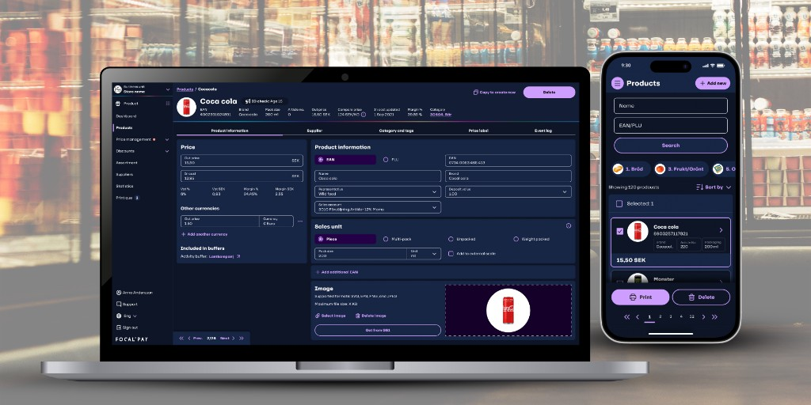
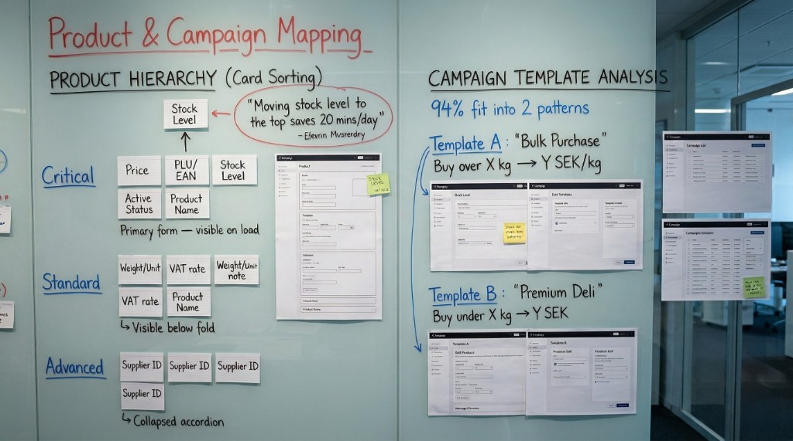
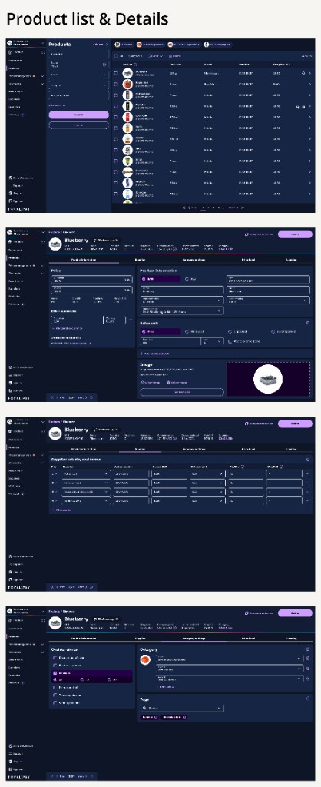
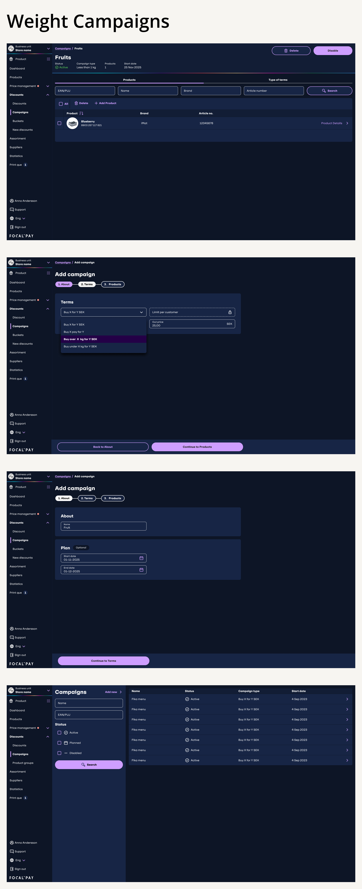
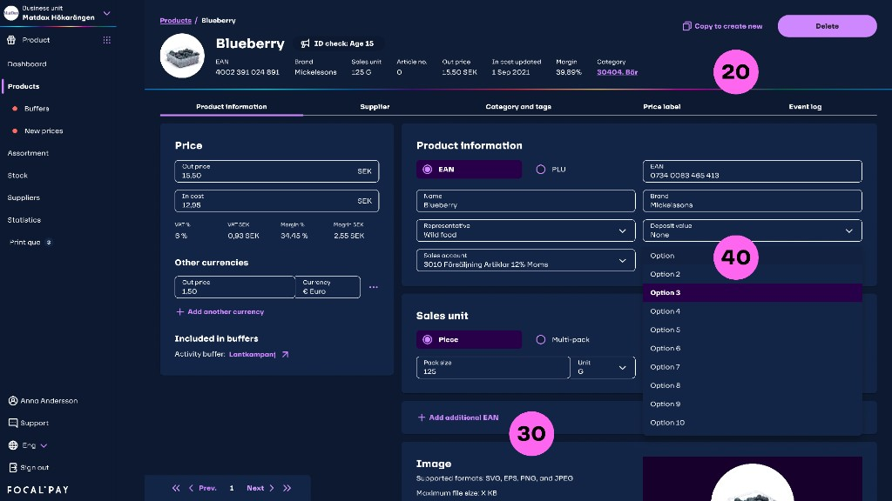
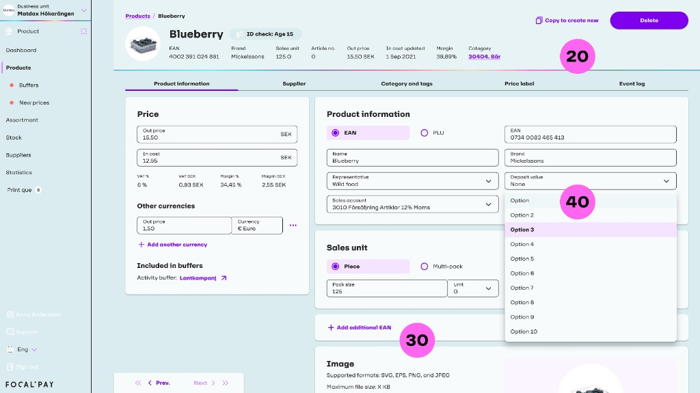
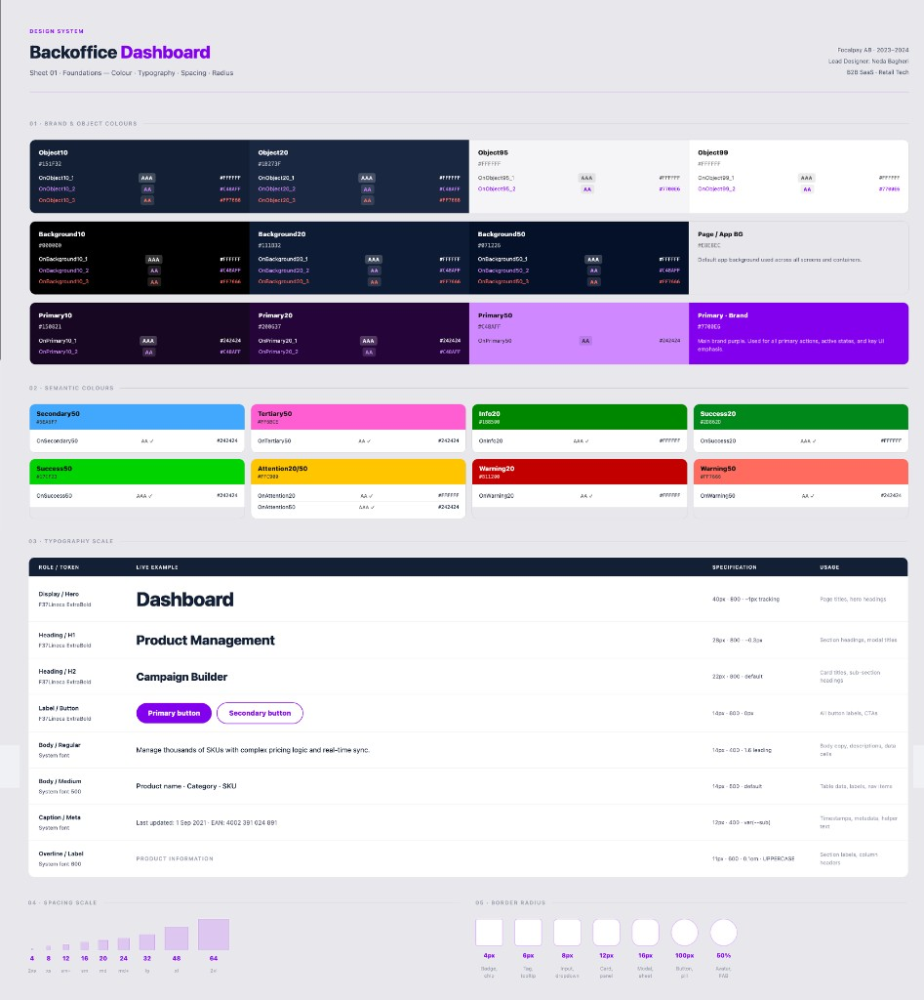
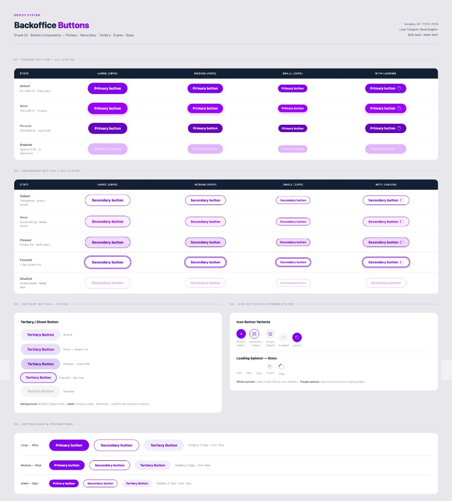
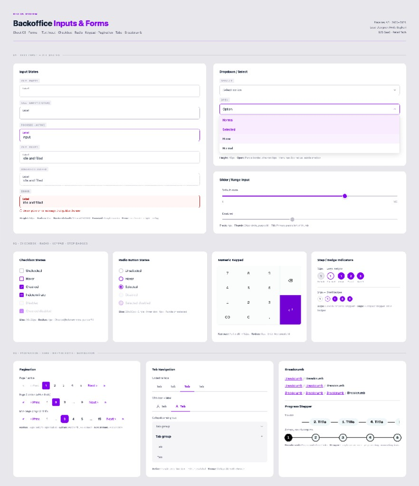

Designing a cloud-based command centre for managing thousands of SKUs and complex pricing logic

Command centre for catalogue and pricing
The Focalpay Back-office is the command centre where all business logic — from product catalogues to pricing — is defined before being executed by the POS terminals.
I joined mid-project to lead UX for Product Management and weighted campaign flows — the two areas where store teams spent the most time in the back-office.
Scope across research, design, and handoff
Interviews with store managers
I conducted contextual interviews with store managers at Matrebellerna, Matvärlden, and Icebug, combining think-aloud tasks with retrospective questioning.
"I know the data I need, but I spend too long hunting for it."
"It's like doing maths while serving customers."
"Every time base prices change, I’m double-checking campaigns by hand — I don’t fully trust the system yet."
Problems in catalogue and campaign work
Retail managers were struggling with fragmented, legacy systems. The core problem was what we called the "Information Gap" — backend data felt disconnected from the fast-paced reality of the store floor.
Managing thousands of SKUs was overwhelming. 40+ fields per product, all visible at once.
Designing discounts for weighted items was notoriously manual and error-prone.
Product, pricing, and campaign data didn’t line up across tools — teams wasted time reconciling before they could trust what was on screen.

Audit, card sorting, wireframes, prototype, A/B test, handoff
Joining mid-project meant I couldn't start from scratch. My process had to be additive — building on what existed while elevating the most problematic modules.
Reviewed existing module designs, identified inconsistencies and UX debt versus the established design system.
Ran 2 card sorting sessions with 4 retail managers each to establish data hierarchy for the product form.
Low-fi wireframes for 3 layout concepts for Product Management. Validated internally with PM and engineers.
Mid-fi Figma prototypes covering core loops: add and edit products, create and review weighted campaigns.
Tested 2 campaign creation flows with 10 store managers. Measured task time, error rate, and SUS score.
Component-level specs aligned to existing design system. Full Zeplin handoff with interaction notes.


Hierarchy for SKUs and templates for weighted pricing
Representative UI from the modules described above: the product catalogue and detail views where information hierarchy was redesigned, followed by weighted campaigns — list, creation flow, and overview.
Hierarchy for the product form
The product form had 40+ data fields per SKU, all visible at once — creating a wall of inputs that paralysed users. Card sorting revealed what managers actually needed upfront.
| Tier | Key Fields | Display Rule |
|---|---|---|
| Critical | Price, PLU/EAN, Stock Level, Active Status, Product Name | Primary form — visible on load |
| Standard | Weight/Unit, VAT rate, Campaign status, Category | Visible below the fold |
| Advanced | Supplier ID, Barcode format, Internal Article Number | Collapsed accordion — on click |
"Moving stock level to the top sounds like a small thing. For us, it saves 20 minutes a day."
— Assistant Manager, MatvärldenTemplates for weighted campaigns
After analysing 3 months of campaign data, I found that 94% of weighted campaigns fell into just two patterns. So I built a template-based builder around them — hiding the complexity entirely.
| Template | Logic | Use Case |
|---|---|---|
| Template A | Buy over X kg → pay Y SEK/kg | Near-expiry items · Bulk purchase |
| Template B | Buy under X kg → pay Y SEK | Premium deli · Small-portion buyers |
A/B test, quotes, and metrics
Focused specifically on creating weighted campaigns — the same problem space as the Campaigns section above.
Avg task time. 3.6 errors/session. 2/5 would use daily.
Avg task time. 0.8 errors/session. 5/5 would use daily.
"The campaign builder finally speaks our language."
— Store Manager, IcebugLessons learned
The template-based builder succeeded because it used the vocabulary managers already used — not because it had fewer fields.
Being a "guardian of consistency" — extending without reinventing — is as valuable as building from scratch.
Moving "Stock Level" 200 pixels up the form saved managers 20 minutes a day. Radical improvements often live in the smallest changes.
Foundations, components, dual themes, and specification sheets
Dark mode

Light mode

The back-office was specified and shipped in two full visual themes: Dark mode and Light mode. The same components, spacing, and interaction patterns apply in both — with token-level colour and surface roles so store teams can work comfortably in different lighting and accessibility preferences.
Below are five specification sheets from the project: foundations (colour, typography, spacing, radius), buttons, inputs and forms, then the product detail pattern shown in both themes.


